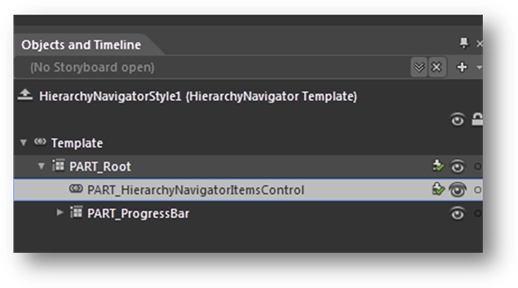
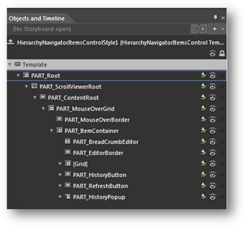
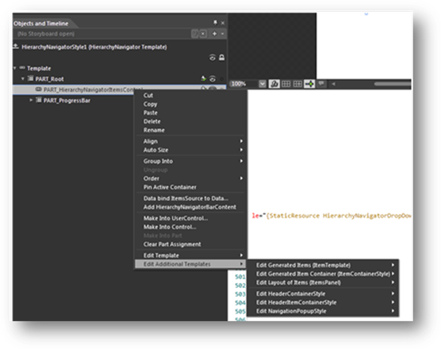
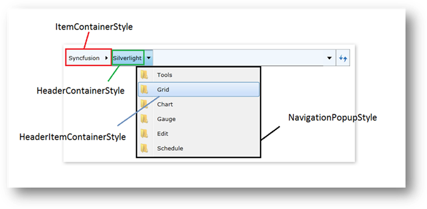
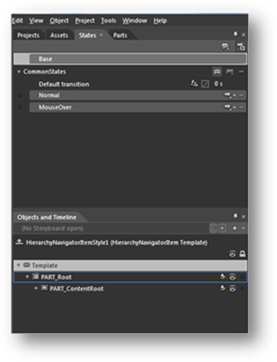
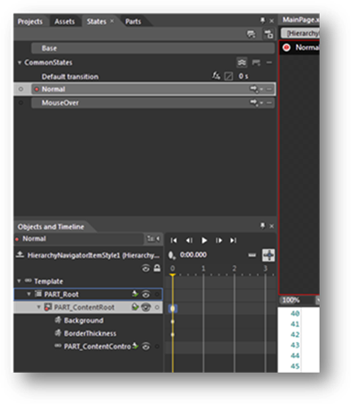

First, create a new application in Microsoft Blend (refer to Creating a HierarchicalNavigator control using Expression Blend).
1. Once the new application has been created, right-click on the HierarchyNavigator control and choose Edit, then select Style and specify a name.

Figure 1031: HierarchyNavigator in Blend
2. Right-click on HierarchyNavigatorItemsControl; choose Edit, then Template, and select the Edit a Copy option to edit the Refresh button, the History button, or the overall content. Additional styles (templates) can be used to edit a template available in the HierarchyNavigatorItemsControl class.

Figure 1032: HierarchyNavigatorItemsControl in Blend
3. Right-click on Part_HierarchyNavigatorItemsControl; choose Edit, then Additional Templates. A list of additional styles to edit will be displayed; those style names are mentioned in Error! Reference source not found.4.

Figure 1033: Edit Additional Templates

Figure 1034: Additional styles illustrated4. Storyboards, which are used in the VisualStateManager of every control, are easy to customize and manage. For example, the HierarchyNavigatorItem control has two states: Normal and MouseOver; they can be found in the States window, which can be reached by going to the Window menu and selecting States.

Figure 1035: States window
5. By clicking on the VisualState name, you can then edit the storyboard.

Figure 1036: Editing the storyboard
 Customized sample styles
Customized sample styles